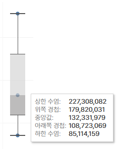
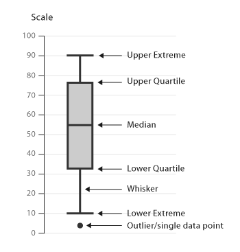
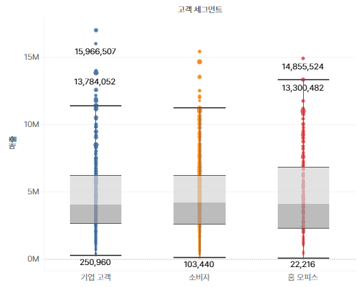

숫자형 데이터의 분포를 다섯 가지 수치로 요약한 시각화 차트
예: 세그먼트별 할인율이 어떻게 다른가?
IQR(사분위 범위) = Q3 - Q1 이 값의 1.5배를 기준으로, 그 바깥은 이상치로 간주!

상자 위쪽이 높다 → 값들이 전반적으로 높아요
상자가 길다 → 값들이 퍼져 있어요 (불안정)
점이 많다 → 유난히 높은/낮은 값이 자주 있어요

목표: 고객 세그먼트별 수익(Profit) 분포를 박스 플롯으로 분석
수익(Profit)
특정 세그먼트가 수익을 많이/적게 내는지, 이상치(outlier)가 존재하는지 시각화
고객 세그먼트
매출
표현 방식(Show Me)
박스 플롯 모양이 적용됨
문제: 현재는 각 세그먼트의 총합만 보고 있음 → 각 주문별 수익을 하나의 점으로 보여야 함
해결법:
고객명
고객번호
세부 정보(Detail)
진짜 분포 기반 박스 플롯 완성됨!
색상
크기
레이블
→ 마크를 통한 상자, 수염, 이상치 모두 시각화 가능!

 IQR(사분위 범위) = Q3 - Q1
IQR(사분위 범위) = Q3 - Q1